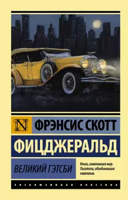

 роман американского писателя Фрэнсиса Скотта Фицджеральда; самое знаменитое литературное произведение «века джаза». Роман был начат Фицджеральдом в Нью-Йорке, а закончен в Париже, где он тогда проживал во время своего путешествия по Европе. Опубликован издательством Scribner’s 10 апреля